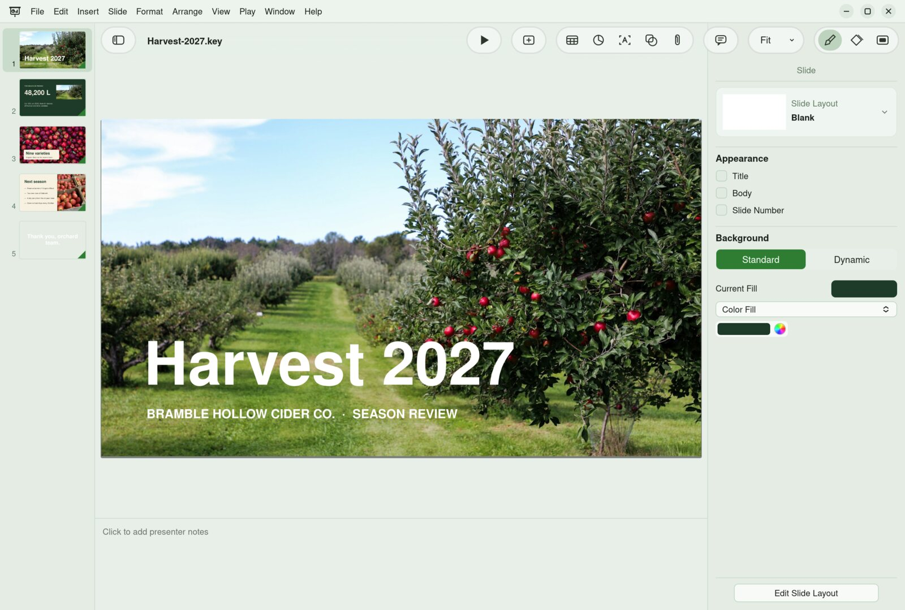

Your Mac files, at home on Linux.
Three apps that open, edit and save real Keynote, Numbers and Pages files, and handle PowerPoint, Excel and Word too. Free and open source.

Three apps. One bramble.
They share one engine for reading, drawing and writing iWork files, so a fix in one reaches all three.
Decks that move.
Open a Keynote or PowerPoint deck, change it, and play it full screen.
Recorded in Keydeck: Magic Move shrinks the photo into its card, then the show ends on an animated background. Scroll to play.
Numbers that add up.
Tables and charts sit anywhere on the sheet, not in one endless grid.
A table from an Excel file, dragged across the sheet by its handle. Scroll to move it.
Pages worth printing.
Write a letter or lay out a newsletter, in the same app.
Recorded in Letters mid-drag: as the photo moves through a Word newsletter, the text re-wraps around it. Scroll to move it.
Opens what people actually send you.
Apple's formats and Microsoft's, in every app. Password-protected iWork files open too, and everything you don't edit stays exactly as it was.
.key and .pptx, plus PDF, images, movies, animated GIFs and HTML.
.numbers and .xlsx, plus CSV, TSV and PDF.
.pages and .docx, plus RTF, Markdown, HTML, plain text, EPUB and PDF.
Wait, it does that?
The hard parts of Keynote, Numbers and Pages, rebuilt one by one.
- Magic MoveObjects that appear on two slides glide, grow and morph between them.
- Animated backgroundsKeynote's dynamic backgrounds, moving behind your slides.
- Every build-inAll 19, plus Cube, Flip, Page Flip, Twist, Swap, Reveal, Shimmer and Sparkle.
- Presenter displayThe next slide, your notes, a clock and a timer on a second screen.
- Locked decksPassword-protected Keynote files open and save, encrypted the same way.
- A shape libraryOver 1,200 shapes in 11 categories, with search, in all three apps.
- Content HubCurated, openly licensed photos and illustrations from Wikimedia Commons in 24 categories, inserted with their credit.
- Tables you can moveDrag a table anywhere; put several side by side on one sheet.
- Charts tied to cellsChange a number and the chart redraws.
- Formulas across sheetsReferences to other tables and sheets recalculate as you type.
- Controls in cellsCheckboxes, sliders, steppers, star ratings and pop-up menus.
- Categories and pivotsGroup rows, filter them and summarise with pivot tables.
- Live text wrapDrag a photo through a page and the text re-wraps around it as it moves.
- Track changesReview edits and comments, then accept or reject them.
- EquationsTypeset maths right in the text.
- Shape toolsUnite, intersect, subtract and exclude shapes; mask and adjust photos.
- Long documentsSections, facing pages, footnotes and a table of contents.
Make it yours.
Light or dark, in thirteen colour themes that tint the whole window. Each app keeps its own look.
Keydeck · Light · Forest
- Tinted, feathered or plain toolbars
- A classic look if you prefer it
- Liquid glass buttons that catch the light, or solid ones
Small details, done properly.
Save an iWork file and everything you didn't change comes back as it was.
Every build-in animation from Keynote is in Keydeck.
Thirteen colour themes, each in light and dark.
Three native iWork formats, thirteen more to open or export.
Know someone stuck with a .key file?
Linux can open Keynote files now. Actually edit them, too.
Send me the .numbers file. I'll edit it on Linux and it'll still open on your Mac.
A free, open-source suite for Keynote, Numbers and Pages files on Linux.
Things people ask.
Will people on a Mac be able to open what I save?
Yes. Bramble saves real .key, .numbers and .pages files, and those files are tested by opening them in Keynote, Numbers and Pages on a Mac.
Does it convert my iWork files?
No. Bramble works on the iWork file itself, so the file you open is the file you save, and the parts you don't edit are written back unchanged. If you do want another format, you can convert any document to PowerPoint, Excel, Word or PDF whenever you like.
Can I use it for Word, Excel and PowerPoint files too?
Yes. Keydeck opens PowerPoint, Values opens Excel and CSV, and Letters opens Word, RTF, HTML and Markdown. Each app also exports to common formats.
Is it free?
Yes. Bramble Office is free to use, and the source code will be public.
Is this made by Apple?
No. Bramble Office is an independent project with no connection to Apple. It works with Apple's file formats so people on Linux can open and share them.
Is everything finished?
Not yet. Some features are still in progress, and each app keeps a list of what works and what's coming.
Help pick what comes next.
These are features being planned or considered. Vote for the ones you want, or ask for something new.
Linux, Windows and macOS.
All three apps run on Linux, Windows and macOS. The first builds are being shared privately for now; public downloads will be listed here when they're ready.
Back to the top